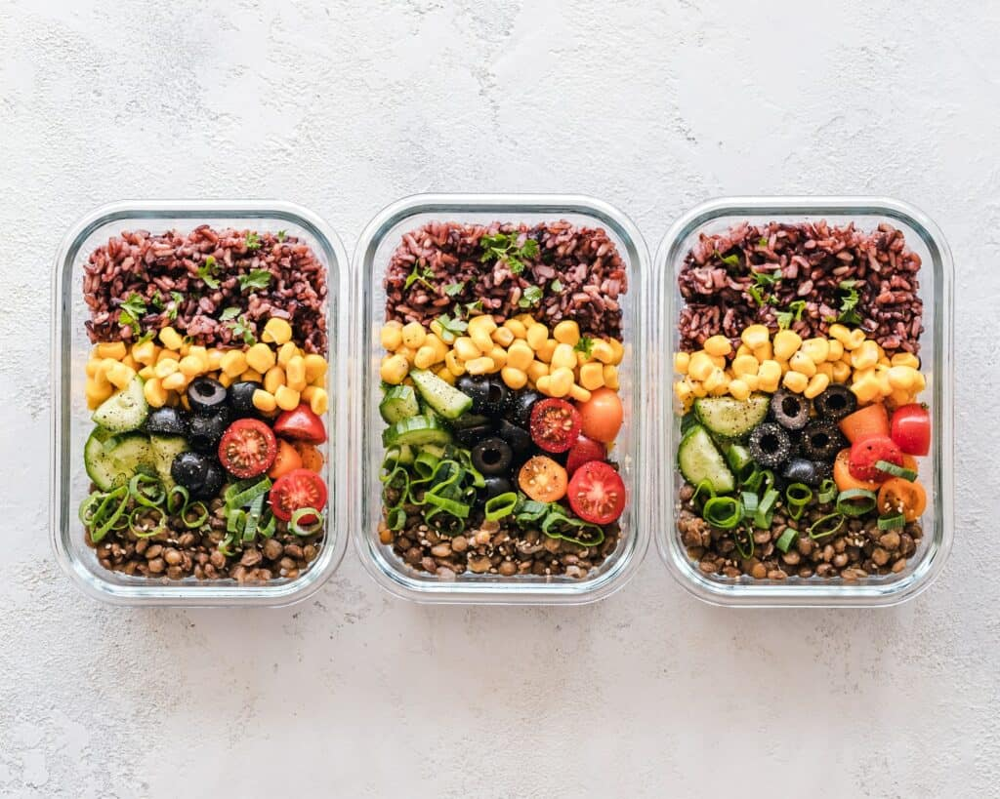
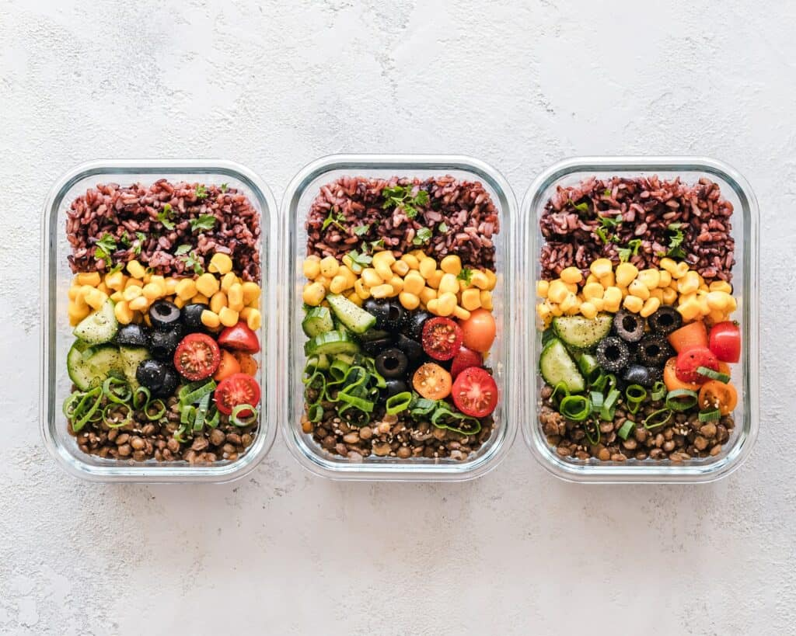

As college students, we often overlook our role as active members of a community. According to Dump and Run, Inc., the average college student produces 640 pounds of solid waste each year, including 500 disposable cups and 320 pounds of paper. Colleges witness significant spikes in their solid waste at the end of the school year.We can easily mitigate these waste issues, especially since we typically live in shared housing or communities.
Here are a few ways to be sustainable on campus:
1. Compost!
2. Cut Down on Plastic Use
3. Recycle, Recycle .. Everything and Anything!
4. Walk or Bike (if you can)
5. Make Conscious Consumer Choices
6. Get Involved in Programs on Campus
7. Shop Locally


 
